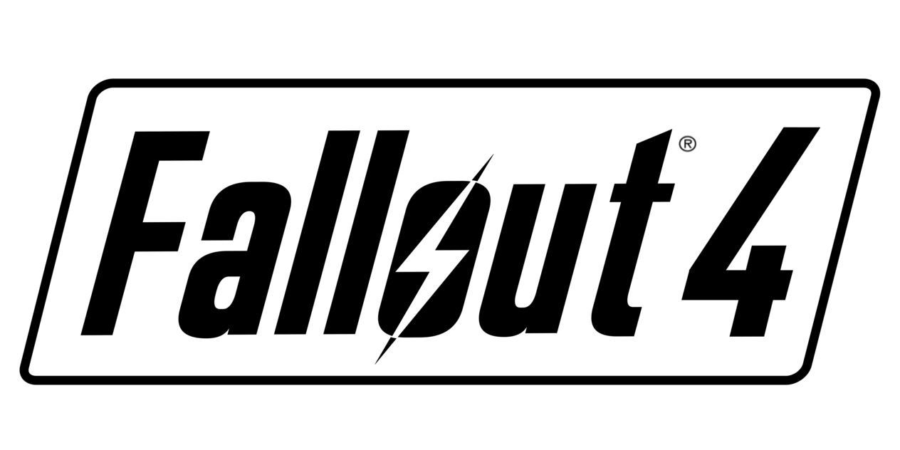

La franquicia Fallout comenzó en 1997 como un RPG isométrico por turnos. Con el tiempo evolucionó hacia un RPG de acción en primera persona, manteniendo siempre la libertad de elección y consecuencias.
| Juego | Año | Motor | Tipo |
|---|---|---|---|
| Fallout | 1997 | Motor propio | RPG isométrico |
| Fallout 3 | 2008 | Gamebryo | RPG acción |
| Fallout: New Vegas | 2010 | Gamebryo | RPG acción |
| Fallout 4 | 2015 | Creation Engine | RPG acción |
Ambientado en Washington D.C., el jugador abandona el Refugio 101 y explora el Yermo Capital. Introdujo el sistema V.A.T.S. en 3D.
Situado en el Mojave, destaca por su profundidad narrativa y sistema de reputación con facciones.
Introduce construcción de asentamientos y mejora el sistema de combate. Se desarrolla en la Commonwealth (Boston).
